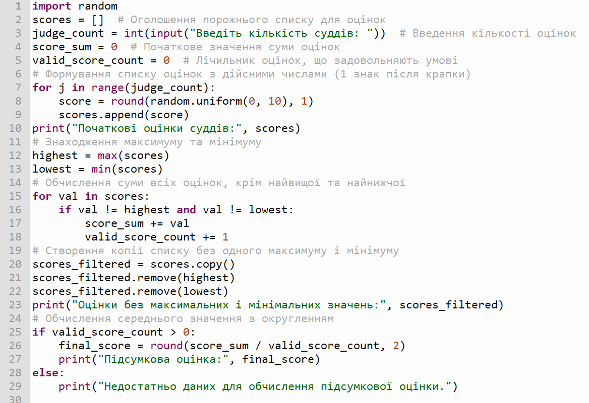
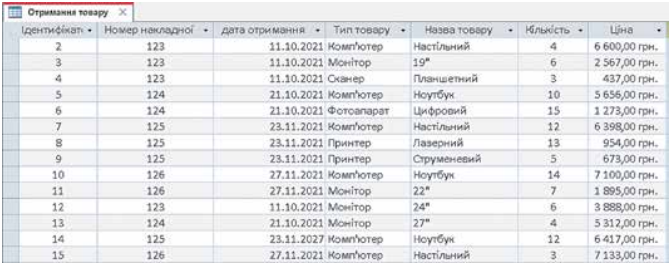
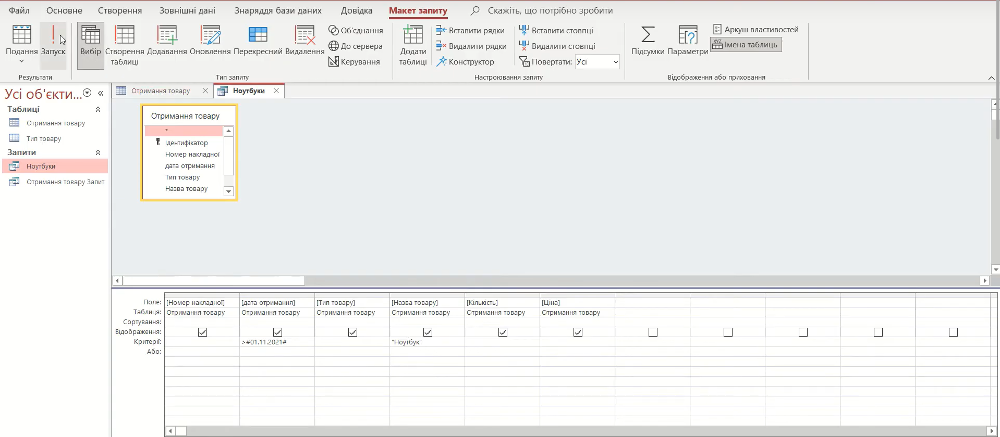

впарва 4.5 - Download
1. Відкрийте таблицю Отримання товару. Для цього двічі клацніть на імені таблиці в Області переходів.
2. Виконайте Створити → Майстер запитів.
3. Виберіть параметр Майстер простих запитів у вікні Новий запит і виберіть ОК.
4. Перемістіть поля Номер накладної, Дата отримання, Тип товару, Назва товару, Кількість, Ціна з поля Доступні
поля до поля Вибрані поля, використовуючи кнопку , та виберіть кнопку Далі.
5. Установіть перемикач у положення Докладно (відображає кожне поле кожного запису) та виберіть кнопку Далі.
6. Уведіть у поле Виберіть назву для запиту назву запиту – Ноутбуки.
7. Установіть перемикач у положення Змінити структуру та виберіть кнопку Готово.
8. Уведіть у рядку Критерії умову відбору:
• у стовпці Дата отримання: > #01.11.2021#
(в даному випадку знак # використовується для позначення типу даних – дати);
• у стовпці Назва
товару: "Ноутбук"

9. Виконайте запит вибором кнопки Запуск у групі Результати тимчасової
вкладки Макет запиту.
10. Визначте кількість знайдених записів.
11. Закрийте вікно створеного запиту. За потреби підтвердіть збереження запиту.
Визначте, які учні мають найвищий середній бал
1. Відобразіть уміст таблиці Підсумкові оцінки. Для цього двічі клацніть на
імені таблиці в Області
переходів.
2. Здійсніть сортування даних за спаданням по полю Середній бал. Для цього:
1. Зробіть поточним
поле Середній бал.
2. Виконайте Основне ⇒ Сортування й фільтр ⇒ За спаданням.
Запишіть у Блокнот прізвища перших трьох учнів у списку.
Відмініть сортування, виконавши Основне ⇒ Сортування й фільтр ⇒ Ви-
далити сортування.
-----
Визначте, використовуючи пошук, чи має хтось з учнів низький рівень на-
вчальних досягнень з якогось з предметів.
1. Відкрийте вікно Пошук і заміна, виконавши Основне ⇒ Пошук ⇒ Знайти.
2. Укажіть такі
значення властивостей пошуку:
• у полі Знайти значення 1;
• у полі зі списком Пошук у значення
Поточний документ;
• у полі зі списком Зіставити значення Усе поле;
3. Виберіть кнопку Знайти далі та
визначте, чи було знайдено записи, що
відповідають умовам пошуку, якщо так, то скільки.
4. Повторіть пошук для
оцінок 2 та 3.
Випишіть кількість 1\2\3 у блокнот
-----
Для виставлення оцінок у додаток свідоцтва про загальну середню освіту слід замінити в таблиці бази даних скорочений
запис про оцінку «зарах» у повний – «зараховано».
1. Відкрийте вікно Пошук і
заміна, виконавши Основне ⇒ Пошук ⇒ Замінити.
2. Укажіть такі значення властивостей заміни:
• у
полі Знайти значення зарах;
• у полі Замінити на значення зараховано;
• у полі зі списком Шукати в
значення Поточний документ;
• у полі зі списком Зіставити значення Усе поле;
3. Здійсніть заміну,
вибравши кнопку Замінити все, та визначте скільки замін
було здійснено.
-----
Використовуючи фільтр, визначте, скільки дівчат з іменем Юлія є в класі.
1. Відкрийте список у заголовку поля Ім’я
вибором кнопки .
2. Залиште позначку прапорця тільки біля значення Юлія.
3. Виберіть кнопку ОК.
4.
Визначте кількість записів, що відповідають умовам фільтру.
5. Відмініть фільтр
Запишіть у блокнот
-----
Знайдіть прізвища учнів, що мають високий рівень навчальних досягнень з інформатики.
1. Відкрийте список у
заголовку поля Інформатика вибором кнопки .
2. Виберіть у списку команду Фільтри чисел, а в її списку –
команду Між.
3. Уведіть у вікні Діапазон чиселу від 10 до 12.
4. Виберіть кнопку ОК.
5. Визначте
кількість записів, що відповідають умовам фільтру.
6. Відмініть фільтр.
Запишіть у блокнот
-----
Покликали вчителя - показали результат.